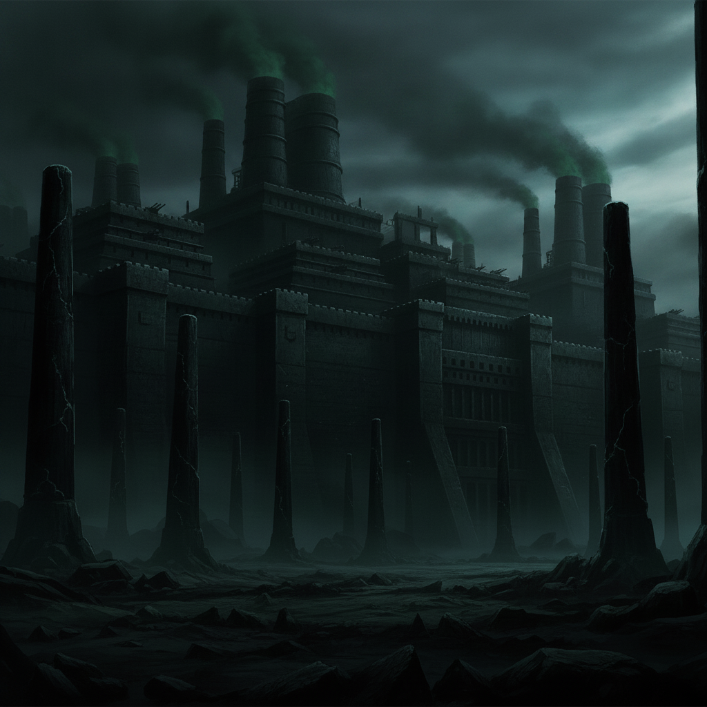
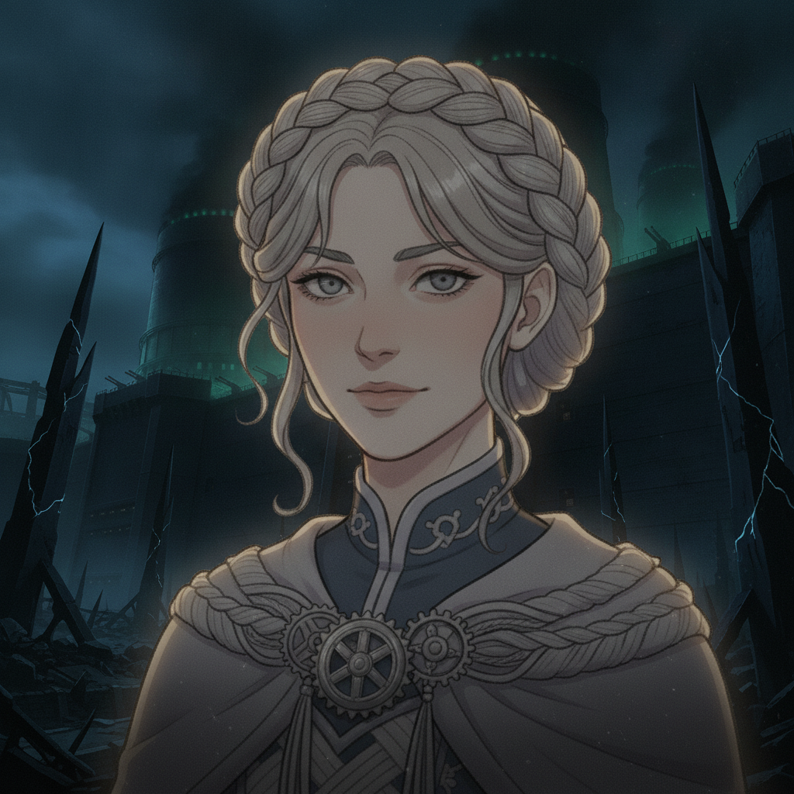

The Enemy Organization's outer works are a menacing fortress of black iron and sickly green aether-glow. Our coalition begins its infiltration, fighting through several intense skirmishes.
Seraphine leads not with raw force, but with a brilliant, calculated turn of the enemy's own courts against itself. She exploits their intricate protocols, manipulates their ciphers, and sows chaos within their ranks.

Seraphine Halcyon“They built this empire on rules and treaties. It is time they learned the true cost of their own game.”
Her weaves are delicate, precise, unraveling enemy defenses from within while our allies press the attack. The peace-broker's daughter has become a formidable warlord in her own right.